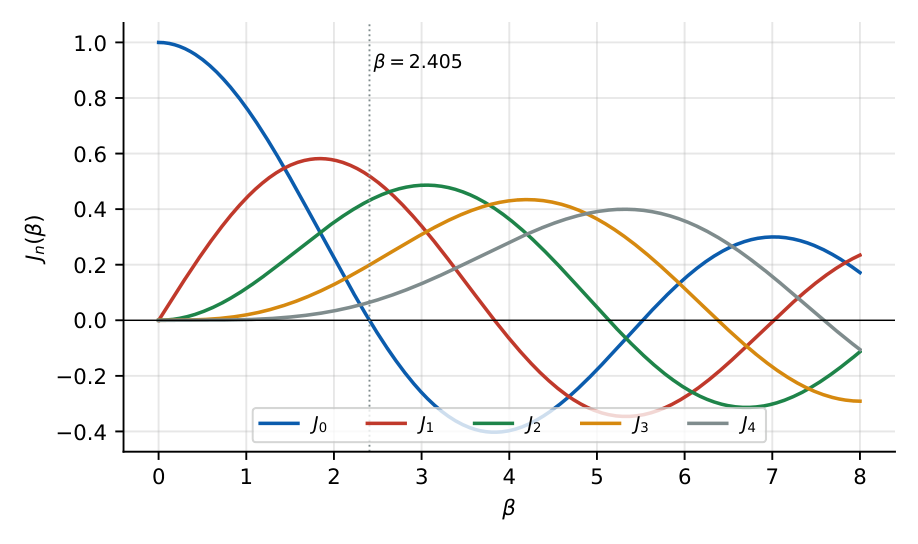

Angle Modulation: FM and PM
In this chapter
Frequency deviation and modulation index, Carson’s bandwidth rule, Bessel-function spectrum, FM versus PM behaviour when message amplitude or frequency changes, power of an angle-modulated wave, and demodulation (discriminator, PLL).
4.1 Definitions
An angle-modulated carrier has constant amplitude: \(s(t)=A_c\cos\theta_i(t)\), with instantaneous frequency \(f_i=\dfrac1{2\pi}\dfrac{d\theta_i}{dt}\).
PM: \(\theta_i=2\pi f_ct+k_pm(t)\), \(\quad f_i=f_c+\dfrac{k_p}{2\pi}\dfrac{dm}{dt}\).
FM: \(f_i=f_c+k_fm(t)\) (\(k_f\) in Hz/V), \(\quad\theta_i=2\pi f_ct+2\pi k_f\displaystyle\int_0^tm(\tau)d\tau\).
Frequency deviation \(\Delta f=\max|f_i-f_c|\). For a tone \(m=A_m\cos2\pi f_mt\):
FM: \(\Delta f=k_fA_m\), \(\ \beta=\dfrac{\Delta f}{f_m}=\dfrac{k_fA_m}{f_m}\). PM: \(\beta=k_pA_m\) (peak phase deviation), \(\ \Delta f=\beta f_m=k_pA_mf_m\).
Power: \(P_t=A_c^2/2\), independent of the modulation.
| Message change | FM | PM |
|---|---|---|
| Amplitude \(A_m\times2\) | \(\Delta f\times2\), \(\beta\times2\) | \(\Delta f\times2\), \(\beta\times2\) |
| Frequency \(f_m\times2\) | \(\Delta f\) unchanged, \(\beta\div2\) | \(\Delta f\times2\), \(\beta\) unchanged |
An FM wave can be generated by integrating \(m\) and phase modulating; a PM wave by differentiating \(m\) and frequency modulating. For a given tone the two are indistinguishable.
\(s(t)=10\cos\left[2\pi10^6t+5\sin(2\pi10^3t)\right]\): \(f_i=10^6+5\times10^3\cos(2\pi10^3t)\), so \(\Delta f=5\) kHz, \(f_m=1\) kHz, \(\beta=5\); \(P_t=50\) W.
4.2 Narrowband and wideband FM
For \(\beta\ll1\) (conventionally \(\beta<0.3\)): \(s(t)\approx A_c\cos\omega_ct-A_c\beta\sin\omega_mt\sin\omega_ct\), which looks like AM with the sideband phase shifted by \(90^\circ\); \(B_T\approx2f_m\).
\(s(t)=A_c\displaystyle\sum_{n=-\infty}^{\infty}J_n(\beta)\cos\left[2\pi(f_c+nf_m)t\right]\).
Spectral lines at \(f_c\pm nf_m\) with amplitude \(A_cJ_n(\beta)\); \(\ \sum_nJ_n^2(\beta)=1\) (constant power). \(J_{-n}=(-1)^nJ_n\).
Carrier amplitude \(A_cJ_0(\beta)\) vanishes at \(\beta=2.405,5.52,8.65,\dots\).
Carson’s rule (\(\approx98\%\) of the power): \(B_T=2(\Delta f+f_m)=2f_m(\beta+1)\).
For \(\beta\ll1\): \(B_T\to2f_m\); for \(\beta\gg1\): \(B_T\to2\Delta f\).
| \(\beta\) | \(J_0\) | \(J_1\) | \(J_2\) | \(J_3\) | \(J_4\) |
|---|---|---|---|---|---|
| 0.5 | 0.938 | 0.242 | 0.031 | – | – |
| 1 | 0.765 | 0.440 | 0.115 | 0.020 | – |
| 2 | 0.224 | 0.577 | 0.353 | 0.129 | 0.034 |

Commercial FM: \(\Delta f=75\) kHz, \(f_m=15\) kHz \(\Rightarrow\beta=5\), \(B_T=2(75+15)=180\) kHz (200 kHz channel).
\(k_f=10\) kHz/V, \(A_m=3\) V, \(f_m=5\) kHz: \(\Delta f=30\) kHz, \(\beta=6\), \(B_T=70\) kHz.
PM with \(k_p=2\) rad/V, \(A_m=3\) V, \(f_m=2\) kHz: \(\beta=6\), \(\Delta f=12\) kHz, \(B_T=2(12+2)=28\) kHz.
Carrier power for \(\beta=2\), \(A_c=10\): \(\tfrac12(10)^2J_0^2(2)=50\times0.0501=2.5\) W.
4.3 Generation
- Direct: voltage-controlled oscillator (VCO), varactor in an LC oscillator; good linearity but poor frequency stability (needs AFC).
- Indirect (Armstrong): crystal oscillator, narrowband PM/FM, then frequency multiplication and mixing. A frequency multiplier by \(n\) multiplies both \(f_c\) and \(\Delta f\) by \(n\); mixing translates \(f_c\) only.
4.4 Demodulation
- Frequency discriminator (slope detector, balanced/Foster–Seeley, ratio detector): converts frequency to amplitude (a differentiator followed by an envelope detector). The output is \(\propto f_i-f_c\). A limiter before it removes amplitude noise.
- Phase-locked loop (PLL): phase detector, loop filter, VCO. When locked, the VCO frequency tracks \(f_i\) and the loop filter (error) voltage is proportional to the message: a very good FM demodulator at low SNR.
- Quadrature detector and zero-crossing detector in integrated circuits.
FM exhibits a capture effect (the stronger of two co-channel signals suppresses the weaker) and a threshold effect at low carrier-to-noise ratio (Ch. 5). Pre-emphasis/de-emphasis (time constant \(75\,\mu\)s in the USA, \(50\,\mu\)s in Europe) boosts high frequencies before transmission and restores them at the receiver, improving high-frequency SNR.
(i) FM deviation is proportional to \(A_m\) only, PM deviation to \(A_mf_m\). (ii) Carson’s rule uses \(\Delta f\) plus \(f_m\), not \(\Delta f\) alone. (iii) Power does not change with \(\beta\): only its distribution between the carrier and sidebands. (iv) \(k_f\) has units Hz/V; \(k_p\) rad/V. (v) A frequency multiplier scales \(\Delta f\) as well as \(f_c\).
Read \(\Delta f\) and \(f_m\) straight from the argument of \(\cos(\omega_ct+\beta\sin\omega_mt)\): \(\beta\) is the coefficient of the sine. Then \(B=2(\beta+1)f_m\). Doubling \(f_m\) in FM halves \(\beta\).
4.5 GATE problems
Q1. The power of an FM wave \(A_c\cos(\ldots)\) is (A) \(A_c^2/2\) regardless of \(\beta\) (B) increases with \(\beta\) (C) decreases with \(\beta\) (D) \(A_c^2(1+\beta^2)/2\).
Q2. In FM, if the message frequency is doubled with amplitude fixed, the modulation index (A) doubles (B) halves (C) is unchanged (D) squares.
Q3. Carson’s rule gives the bandwidth (A) \(2\Delta f\) (B) \(2(\Delta f+f_m)\) (C) \(\Delta f+f_m\) (D) \(2f_m\).
Q4. The carrier component of a single-tone FM wave vanishes at \(\beta=\) (A) 1 (B) 2.405 (C) 3 (D) 4.
Answers: Q1 (A). Q2 (B). Q3 (B). Q4 (B).
Q5. \(s(t)=10\cos[2\pi\times10^6t+5\sin(2\pi\times10^3t)]\). The (Carson) bandwidth is (A) 12 kHz (B) 10 kHz (C) 6 kHz (D) 2 kHz.
Q6. For commercial FM with \(\Delta f=75\) kHz and \(f_m=15\) kHz, the bandwidth is (A) 90 kHz (B) 150 kHz (C) 180 kHz (D) 30 kHz.
Q7. \(A_c=10\) V, \(\beta=2\) (\(J_0(2)=0.224\)). Power in the carrier is (A) 2.5 W (B) 5 W (C) 50 W (D) 25 W.
Answers: Q5 (A). Q6 (C). Q7 (A).
Q8. FM: \(k_f=10\) kHz/V, \(A_m=3\) V, \(f_m=5\) kHz. Bandwidth (kHz): .
Q9. PM: \(k_p=2\) rad/V, \(A_m=3\) V, \(f_m=2\) kHz. Frequency deviation (kHz): .
Answers: Q8: 70. Q9: \(6\times2=12\).
Q10. Which are true for angle modulation? (A) Constant envelope. (B) FM bandwidth can exceed AM bandwidth. (C) A PLL can demodulate FM. (D) Power rises with \(\beta\).
Answers: Q10: (A), (B), (C).
T1. \(\beta\) definition. T2. Armstrong method uses? T3. Effect of a \(\times4\) multiplier on \(\Delta f\).
Answers: T1: \(\Delta f/f_m\). T2: NBFM then multiplication and mixing. T3: multiplied by 4.
- FM: \(\Delta f=k_fA_m\), \(\beta=\Delta f/f_m\); PM: \(\beta=k_pA_m\); constant power \(A_c^2/2\).
- Carson \(B=2(\Delta f+f_m)\); NBFM \(\approx2f_m\); Bessel spectrum, \(J_0=0\) at 2.405.
- Demod: discriminator, PLL; Armstrong generation; pre-/de-emphasis.